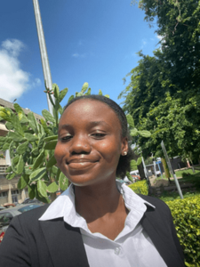

Introduction
Open source is more than just a buzzword, it plays a crucial role in the tech ecosystem, fostering growth, collaboration, effective communication, and innovation. Participating in open source projects provides real-world experience, allowing contributors to make impactful contributions, learn best practices, and receive valuable feedback.
Outreachy offers internship opportunities in open source and open science, specifically for individuals underrepresented in the technological industry.
Through Outreachy, we were able to work as interns at Bioconductor, where we are currently contributing to the Microbiome Study Curation project. Whether you’re a first time contributor, an Outreachy applicant, or you are interested in contributing to the Bioconductor project, this blog post will provide detailed explanations and insights to guide you on how to make meaningful contributions.
Outreachy
Outreachy is a paid remote internship program that aims to support underrepresented groups who face systemic bias or discrimination in the technology industry of their country. Outreachy interns work remotely with mentors from Free and Open Source Software (FOSS) communities on several projects including programming, user experience, documentation, illustration and graphical design, or data science. Read more about Outreachy here.
Outreachy application process
The application process for Outreachy consists of three steps:
1. Initial application period:
After making sure that you’re eligible to apply for Outreachy, applicants proceed to fill out the initial application form, which consists of some Yes/ No answers and about four essays in which you share your personal stories of being underrepresented. After Outreachy organizers review the initial applications and essays, accepted applicants are notified via email. Read more about the application period here.
2. Contribution period:
The contribution period will open as soon as the initial application is accepted. ‘Open source contributors’ is the term used to describe those who regularly work on open source projects. When you contribute to an Outreachy project, you become an open source contributor. To have a successful contribution phase, the first step is to choose one or two projects that pique your interest. Secondly, you must get in touch with the project mentor for further information on how to start contributing. Lastly, start contributing and record your contributions. Only applicants who contribute to a project, record their contributions, and submit a final application on the Outreachy website are considered for internship.
3. Intern selection period:
After the final applications are evaluated, selected interns are announced shortly after. Applicants are advised to read the internship guide to learn more about time commitment and more details about what Outreachy expects from interns.
Why join Outreachy?
The core values of Outreachy include diversity, inclusivity, and providing a platform for underrepresented groups to grow and excel in the open source community. Participating in the Outreachy internship means more than just skill development, it means joining a movement that promotes diversity and inclusivity. Some features that make the program unique include: remote mentoring with experienced FOSS contributors, meaningful mentorships, financial support, diversity and positive global impact.
Microbiome Study Curation
The Microbiome Study Curation project is a Bioconductor project that uses BugSigDB, a database of manually curated microbial signatures obtained from the results of published microbiome differential abundance studies. Differential abundance studies are studies that compare the relative abundance of different microbial species in different samples in hosts of interest (humans, animals, and environmental conditions). In humans, they help to understand how different geographical and environmental factors can lead to changes in the microbiome, thereby increasing the likelihood of developing conditions such as diabetes, obesity, cardiovascular and neurological diseases, allergies, and inflammatory bowel disease. This information helps to give insights into the role of specific microbes in different biological processes or diseases. The Microbiome Study Curation project entails curating new studies on BugSigDB, reviewing studies that have already been curated, and analyzing BugSigDB data using R. To learn more about the project and how to contribute to it, check Esther’s blog post.
Esther’s experience

Hello there! I’m Esther Afuape, a graduate of microbiology from University of Lagos, Nigeria. I love reading crime/mystery fiction, cooking, and spending time at the beach.
I got to know about Outreachy through an acquaintance who was an intern in the program. I’m currently partaking in the December 2023 cohort and wrote about my experience during the contribution phase in my blog. It’s been an awesome 8 whole weeks interning at Bioconductor! I wish I could slow down time because this means that the end of my internship is drawing closer. Before I applied for Outreachy and eventually came across Bioconductor on the Projects list, I was at a loss as to what to do with my microbiology degree in Nigeria, where a definitive niche for microbiologists is lacking. I had applied to the program with the hopes of doing a project in a different tech field. Coming across the Microbiome Curation Project was so exciting as it was related to my microbiology background. I found the project fascinating and immediately joined the project’s community Slack channel. What stood out for me was the support in the community. I found it easier to get a hang of things because there was always a mentor or other community members ready to help!
As an intern, I’ve worked on the project by carrying out reviews of curated studies. I’ve absolutely enjoyed doing this and I find it interesting to see how volatile the microbiome is and how subtle lifestyle choices can cause changes in it. My literature review skills have greatly improved and I have a better understanding of the scientific methods used in research. I also look forward to developing basic data analysis during the rest of my internship.
I’m so grateful for my mentor, Svetlana Perovic, for her invaluable guidance and support so far. Her mentorship has instilled in me the value of stepping out of my comfort zone. I’d also like to express my gratitude to other community members for always helping me out when I’m stuck, and the other mentors – Levi Waldron and Chloe Mirzayi, for entrusting me with this incredible opportunity. If you’d like to read more on my experience as a Bioconductor intern, I invite you to visit my blog here.
Peace Sandy’s Experience
Hi! My name is Peace Sandy, and I’m from Nigeria. I hold a Bachelor’s degree in Microbiology and am both a Software Developer and a Technical Writer. Research is my passion, and I’m very interested in Bioinformatics. My hobbies are reading, coding, and baking.
During the Outreachy contribution period, I specifically sought projects that aligned with my skill set. Finding the Microbiome Study Curation project was thrilling, as it combined my research interests with microbiome studies.
My long standing fascination with Bioinformatics, microbiome studies, open science, and research made the Microbiome Study Curation project highly appealing. Participating as an Outreachy intern in Bioconductor has been an incredibly educational and rewarding experience. I’ve had the privilege of learning from experienced mentors and open-source contributors. The Bioconductor community is extremely welcoming and collaborative.
I am confident that the exposure and knowledge I am gaining from the Bioconductor community will significantly contribute to my career advancement. Having interned for over a month, the experience has been truly amazing. My mentor, Levi Waldron, has been incredibly supportive, patient, and welcoming, as have the other mentors, Chloe Mirzayi and Svetlana Perovic.
So far, I’ve learned a tremendous amount, and my knowledge of microbiome studies, R programming, and research skills has significantly improved. I now have a better understanding of ontology terms.
If you’re interested in reading more about my experience as an Outreachy intern with Bioconductor and my journey with the Microbiome Study Curation project, you can check out my blog.
Chioma’s Experience
Everyday of the past few months with Outreachy has been an opportunity to learn something new, I consider myself lucky to be part of the selected interns.
Hello, I’m Chioma Onyido, I’ve a BSc. and MSc. in Biochemistry/ Molecular Biology from Covenant University, Nigeria.
I had my first encounter with Bioinformatics in my undergraduate third year (2015) and have been interested in it since then. Driven by my love for data and combining the best of both worlds (biology and data science), in 2022, I took a bold step to transition. I started learning how to code, picking up Bioinformatics projects and practicing with them.
Here is why I chose Bioconductor
I learned about Outreachy from a buddy during one of our chats, so I decided to look into it further while doing my research. After my initial application was approved, I knew that I was going to apply for a Bioinformatics/ biology-related project, because I am really curious and passionate about exploring and becoming a voice in this field. I initially began contributing to three projects on the Outreachy website during the contribution phase, but I decided to stick with the Bioconductor Microbiome Study Curation project for many reasons:
Passion: “Microbiome knowledge” and “literature review” were listed as the required skills that resonated well with my professional strengths and passion.
Supportive community: I chose Bioconductor because of how interactive and supportive the community is. Before applying for Outreachy, I did well to read blogs by alums on the best way to go about applying for the internship, looking out more specifically for the do’s and dont’s, and one consistent advice I saw was- “applying for more than 1 project increases one’s chances”. I tried to do this, but it didn’t take me too long to realize that I’d rather focus my energy and time on one thing, put my best into it and DO IT VERY WELL.
It’s the ‘BugSigDB vibe’ for me: One thing that intrigued me about the BugSigDB project is the fact that we share similar values- I love to help and see people win, and I saw a similar energy in the BugSigDB community. Even with the influx of comments, observations and/or questions from contributors during the Outreachy contribution phase, the BugSigDB community was active, and so were the mentors. The mentors were (still are) attentive, patient, thorough and present.
Premium learning experience: In terms of my professional growth, BugSigDB has significantly contributed to this area by providing valuable courses for my continuous development. Thanks to the BugSigDB community- Professor Levi, I was given access to a paid DataCamp classroom, where I’ve had the opportunity to enhance my skills and boost my confidence in R programming.
I am grateful to my mentor Chloe Mirzayi for her time and efforts in my growth and progress. I am also grateful to Svetlana Perovic for her guidance, and for being there to cross my T’s and dot my I’s whenever I reach out. I consider it a privilege and a blessing to be in the best community, contributing to such a big project.
Upcoming opportunities at Outreachy and Bioconductor
One of the things that make open source beautiful is its collaborative nature, where different ideas come together to shape the future of technology.
Bioconductor is participating in the Outreachy May 2024 to August 2024 internship round. Mentors interested in offering guidance and knowledge can sign up and submit a project proposal for the next outreachy cohort. The deadline to submit projects is Feb. 23, 2024 4 pm UTC. Aspiring interns eager to partake in this rewarding experience can apply in late August 2024 for the December 2024 to March 2025 cohort.
© 2024 Bioconductor. Content is published under Creative Commons CC-BY-4.0 License for the text and BSD 3-Clause License for any code. | R-Bloggers